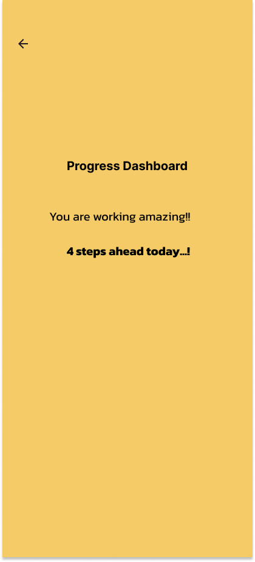

TaskFlow - To Do Application UI/UX Design
A productivity-focused To-Do application designed to help users organize daily tasks, track progress, and stay motivated throughout the day.
Project Features
- Task Management System
- Add New Task Screen
- Completed Tasks Tracking
- Progress Dashboard
- Interactive Navigation Prototype
- Clean Mobile UI Design
Tools Used
- Figma
- Prototyping
- Components & Variants
- User Flow Design
Project Objective
To create a simple and intuitive task management experience that helps users stay organized and productive through a clean user interface and smooth navigation.

Home Page UI

Task Page UI

Task Status

Dashboard UI
View Prototype